TCP协议详解 @
传输控制协议 TCP 概述 @
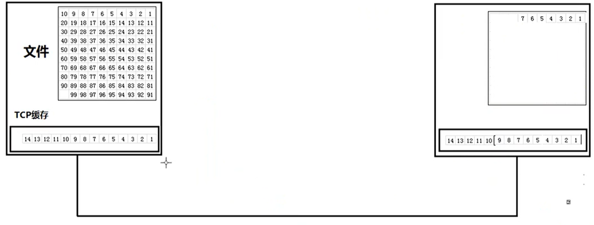
- TCP 是面向连接的传输层协议
- 每一条 TCP 连接只能有两个端点(endpoing)，每一条 TCP 连接只能是点对点的
- TCP 提供可靠交付的服务
- TCP 提供全双工通信
- 面向字节流
传输文件时，首先将文件进行分组然后放入缓存中，分组有大有小，将缓存中的数据再随机分组进行传输，接收端接收到分组的数据后放入接收缓存中，如果有丢包现象，要求发送端重新发送该丢包处后的数据 ，接收完成后，将数据存入计算机，最后拼接成完整的文件。
TCP 协议需要解决的问题 @
- TCP 如何实现可靠传输
- TCP 协议如何实现流量控制
- TCP 协议如何避免网络拥塞
TCP 的连接 @
- TCP 把连接作为最基本的抽象。
- 每一条 TCP 连接有两个端点。
- TCP 连接的端口不是主机，不是主机的 IP 地址，不是应用进程，也不是传输层的协议端口，TCP 连接的端点叫做套接字(socket)，端口号拼接到 IP 地址即构成了套接字。
可靠传输原理-停止等待协议 @
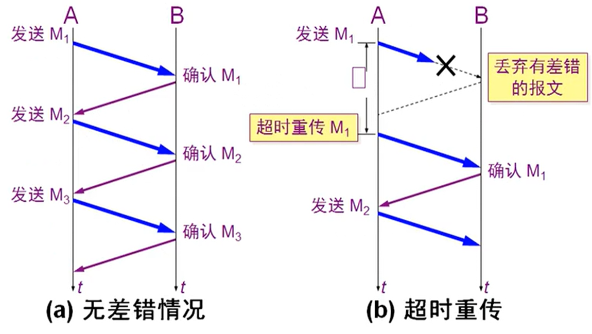
实现可靠传输要求发送端每发送一个数据包之后，接收端需要给发送端一个确认，并要求发送下一个数据包。如果发送方发送的数据包丢失，等待一段时间后发送方没有收到接收端的确认收到，则发送方会重新发送数据包。
- 再发送完一个分组后，必须暂时保留已发送的分组副本。
- 分组和确认分组都必须进行编号
- 超时计时器的重传时间应当比数据在分组传输的平均往返时间更长一些。
确认丢失和确认迟到 @
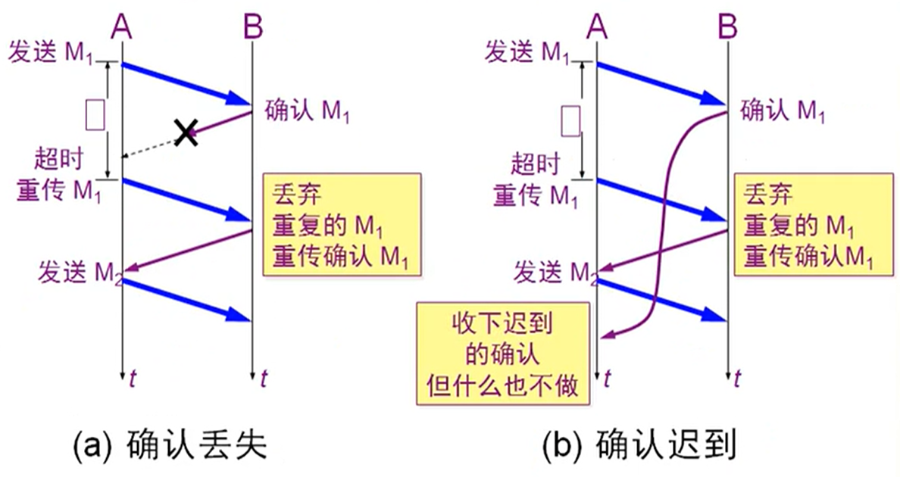
接收端收到数据包后向发送端发送确认消息，如果确认消息丢失，发送端没有收到确认将会重新发送数据包，此时接收端会丢弃原有数据包，接收新的数据包。
如果发送端发送数据包后，接收端回复消息延迟，发送端会以为接收端没有收到数据包，重新发送，然后接收端丢弃原有数据包，接收新的数据包，过一段时间后发送端收到之前的确认消息会忽视。
可靠通信的实现 @
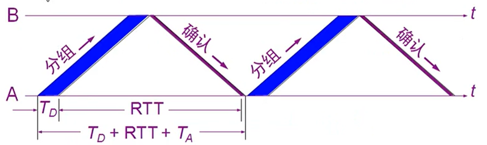
- 使用上述的确认和重传机制，我们就可以在不可靠的传输网络上实现可靠的通信。
- 这种可靠传输协议常称为自动重传请求 ARQ(Automatic Repeat reQuest).
- ARQ 表明重传的请求是自动进行的。接收方不需要请求发送方重传某个出错的分组。
停止等待协议优点是简单，缺点是信道利用率太低。
信道利用率: U = T(D) / T(D) + RTT + T(A)
流水线传输 @
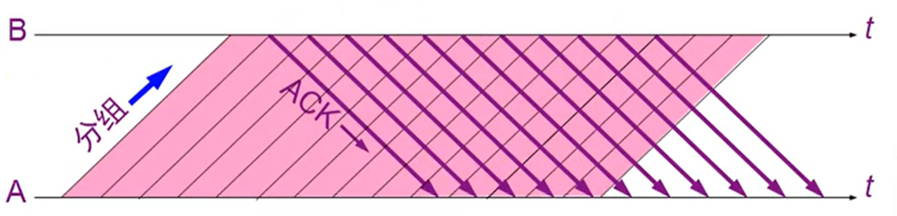
发送方可连续发送多个分组，不必每发完一个分组就停顿下来等待对方确认。
由于信道上一直有数据不间断地传送，这种传输方式可获得很高的信道利用率。
连续 ARQ 协议 @
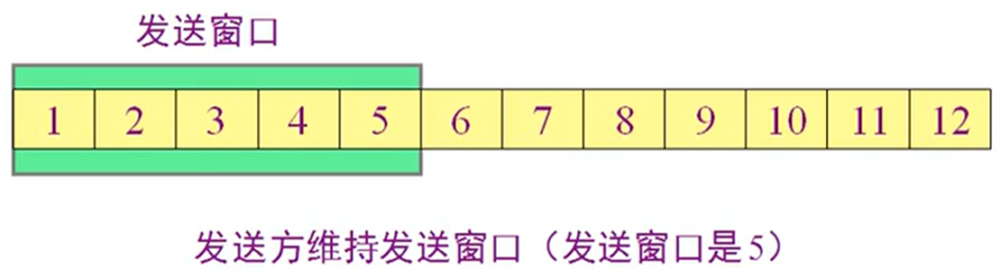
发送端口假设为 5，发送端需要发送 5 个数据包。
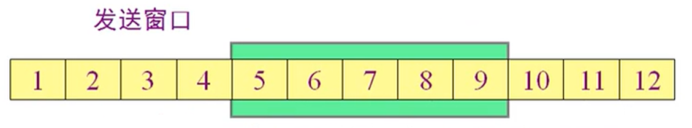
接收端收到前四个数据包后，向发送端进行确认，然后发送端会将发送窗口进行右移，如果 12 收到了，3 没有收到，则滑动窗口会会回溯到 3 位置，重新发送。
TCP 报文首部格式 @
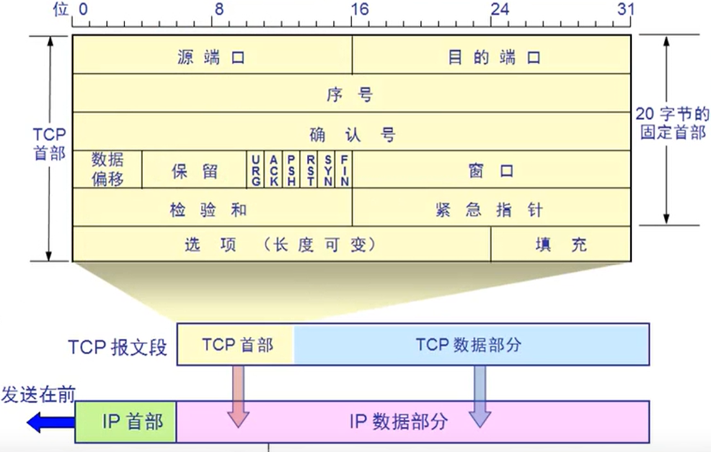
- 源端口： 2 个字节
- 目的端口： 2 个字节
- 序号： 当前数据的第一个字节在整个文件中的序号
- 确认号(ACK)： 接收端发送，提示发送端下一次该发送的数据在整个文件中的序号。接收端收到后，将这个序号之前的数据从缓存中删除。
- 数据偏移： 表示当前 TCP 报文段后多少个字节是 TCP 的数据部分。数据偏移最多表示二进制 1111，即 10 进制的 15，每个 1 表示 4 个字节，所以数据偏移最大表示报文首部为 60 个字节。
- 保留： 6 位，无作用
- URG： urgent，代表优先级，发送端优先发送而不是在缓存中排队。
- ACK： acknowledge，设置 1 代表确认建立会话。
- PSH： 设置 1 代表接收端优先读取，不需要再接收端的缓存中排队
- RST： reset，设置为 1 代表 TCP 会话出现严重错误，必须释放和重连。
- SYN： 同步，设置为 1 代表需要发起会话。
- FIN： finish，设置为 1 代表释放连接
- 窗口： 接收端先发送，发送端根据接收端的窗口大小确定发送端窗口大小。
- 检验和： 校验范围，TCP 首部和数据
- 紧急指针： 只有 URG 设置为 1 可用，表示优先级数据的尾部
WindowXP 可以利用 TCP 协议漏洞进行 Land 与 SYN 攻击
TCP 抓包分析 @
访问网站进行抓包，数据包主要分为 TCP、UDP 和 ARP。
- 首先 ARP 协议发送广播询问目标网站 IP 地址
- DNS 进行域名解析
- TCP 建立会话，进行三次握手然后发送数据
MSS：能传输的最大数据包，Win： 窗口大小
传输数据流程 @
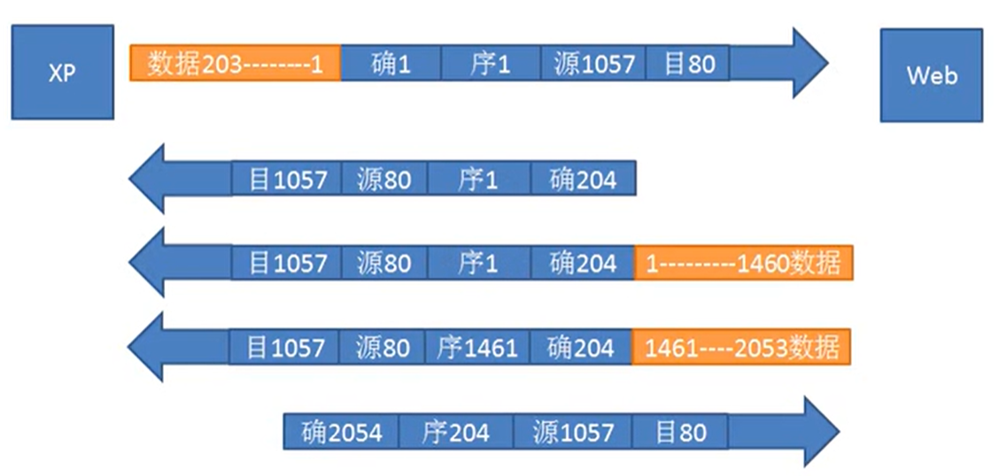
以字节为单位的滑动窗口技术实现可靠传输 @
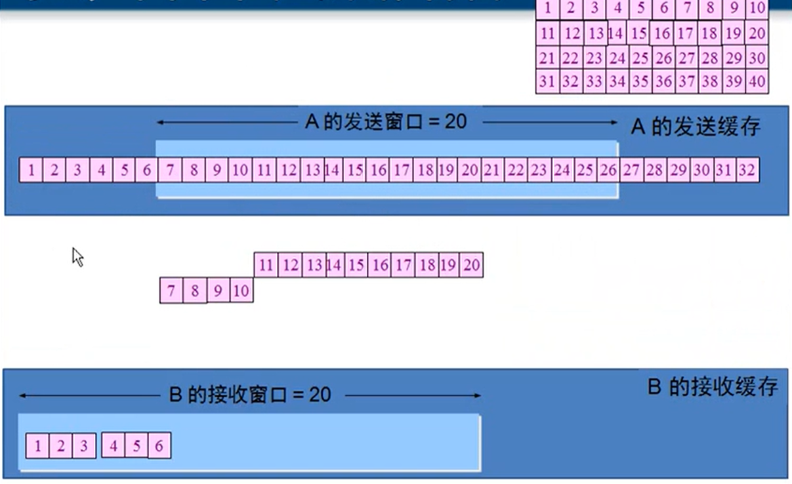
A 的发送窗口由 B 的接收窗口大小决定，TCP 协议会协商窗口大小参数。
在没有收到 B 确认收到之前，A 不能删掉滑动窗口内的内容，A 可以持续给 B 发送，直到 A 的滑动窗口内数据都发了。
B 收到后给 A 的确认消息后反馈 ACK，序号是下一个应该发送的字节的序号，A 收到后，就可以滑动窗口到对应的位置。例如 B 反馈 ACK 是 7，那么 A 的滑窗可以移动到 7 位置，1-6 删除。21-26 可以发送。
以上是正常状态下的情况。如果出现丢失情况，例如 7-9 丢失，此时 B 反馈的 ACK=7.因为 10-12 收到了，因此 B 发送 SACK(选择性确认)，A 只发送 7-9。
超时重传时间的选择 @
TCP 每发送一个报文段，就对这个报文段设置一次计时器，只要计时器设置的重传时间到但还没收到确认，就要重传这一段报文。 新的 RTT(s) = (1 - a)_(旧的 RTT(s)) +a _新的 RTT 样本 超时重传时间应略大于上面的出的加权平均往返时间 RTT(s) RFC2988 推荐的 a 值为 1/8
TCP 流量控制 @
解决通信两端处理时间不一样的问题。通过实时调整滑窗尺寸的大小(尺寸可以是 0)来实现流量控制。接收端主动调整滑窗大小，发送端根据接收端发送的报文调整相应的滑窗。发送端也会定时发送报文向接收端确认滑窗信息，避免接收端发送的相关调整滑窗大小的报文丢失带来的影响。
TCP 拥塞控制 @
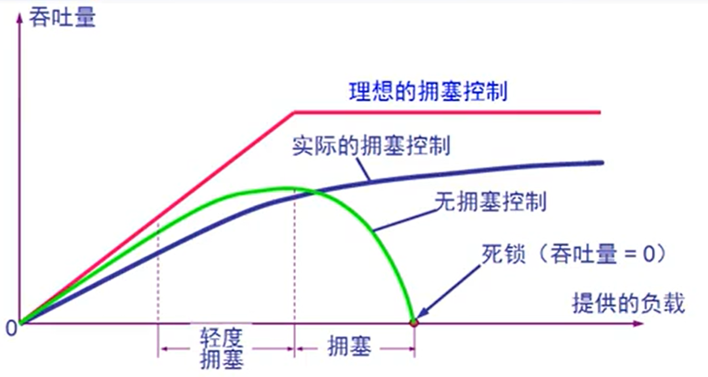
出现资源拥塞的条件：对资源需求的总和 > 可用资源
拥塞控制是一个全局性的过程，涉及到所有的主机、所有的路由器，以及与降低网络传输性能有关的所有因素。
流量控制往往指在给定的发送端和接收端之间的点对点通信量的控制，它所要做的就是抑制发送端发送数据的速率，以便使接收端来得及接收。
慢开始和拥塞避免 @
发送方维持拥塞窗口,发送方控制拥塞窗口的原则：
只要网络没有出现拥塞，拥塞窗口就再增大一些，以便把更多的分组发送出去。
只要网络出现拥塞，拥塞窗口就减小一些，以减少注入到网络中的分组数。
拥塞窗口 cwnd(congestion window)
慢开始算法的原理 @
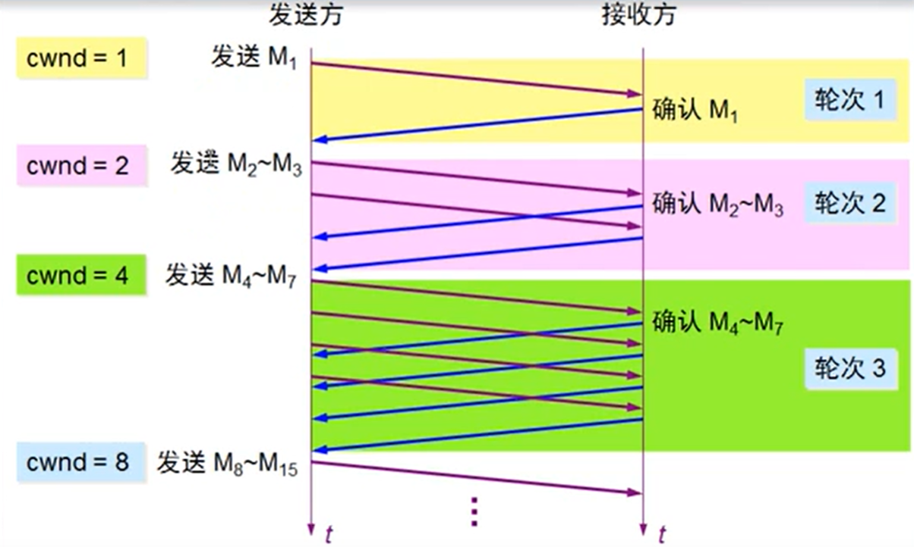
设置慢开始门限状态变量 ssthresh @
慢开始门限 ssthresh 的用法如下：
- 当 cwnd<ssthresh 时，使用慢开始算法。
- 当 cwnd>ssthresh 时，停止使用满开始算法而改用拥塞避免算法。
- 当 cwnd=ssthresh 时，既可以使用慢开始算法，也可以使用拥塞避免算法。
拥塞避免算法的思路是让拥塞窗口 cwnd 缓慢的增大，即每经过一个往返时间 RTT 就把发送方的拥塞窗口 cwnd 加 1，而不是加倍，使拥塞窗口 cwnd 按线性规律缓慢增长。
慢开始和拥塞避免算法举例 @
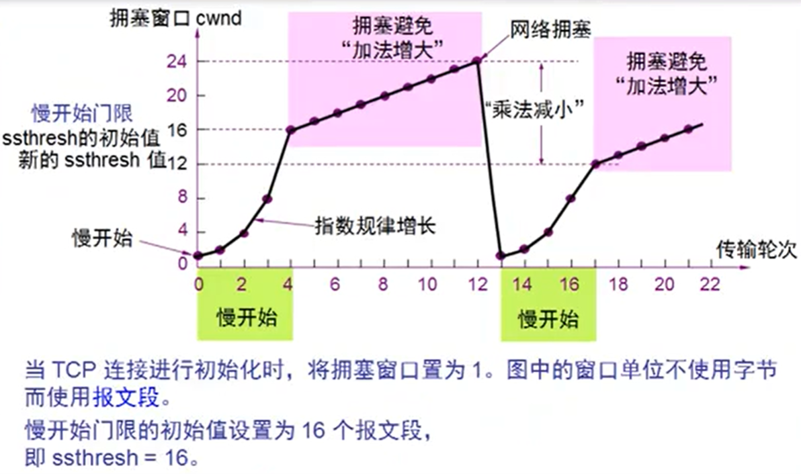
拥塞避免并非指完全能够避免拥塞，是在拥塞避免阶段把拥塞窗口控制为按线性规律增长，是网络比较不容易出现拥塞。
快重传和快恢复 @
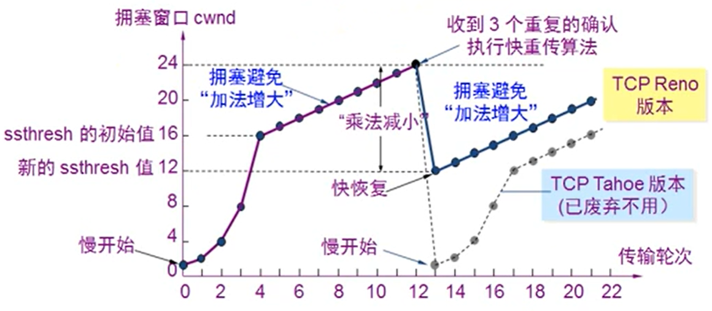
快重传算法首先要求接收方每收到一个失序的报文后就立即发出重复确定。这样做可以让发送方及早知道有报文没有到达接收方。
当发送端收到连续三个重复的确定时，就执行”乘法减小”算法，把慢开始门限 ssthresh 减半，但拥塞窗口 cwnd 现在不设置为 1，而是设置为慢开始门限 ssthresh 减半后的数值，然后开始执行拥塞避免算法(“加法增大”),使拥塞窗口缓慢地线性增大。
发送窗口的实际上限值 @
发送方的发送窗口的上限值应当取为接收方窗口和拥塞窗口这两个变量中较小的一个，即：
发送窗口上限值=Min[rwnd,cwnd]
TCP 的传输连接管理 @
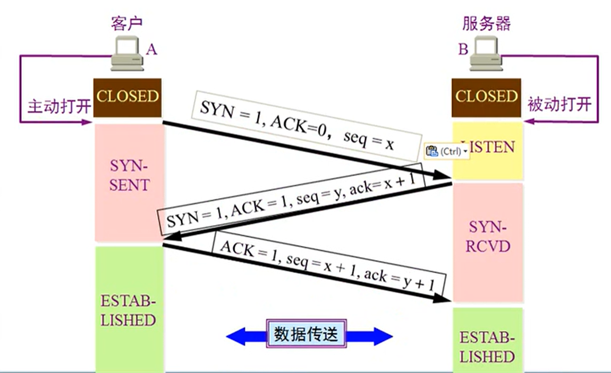
传输连接有三个阶段： 连接建立，数据传送，连接释放
- TCP 连接的建立都是采用客户服务器方式
- 主动发起连接建立的应用进程叫做客户(client)
- 被动等待连接建立的应用进程叫做服务器(server)
第三次握手的原因 @
假如把三次握手改成仅需要两次握手，死锁是可能发生的。作为例子，考虑计算机 A 和 B 之间的通信，假定 A 给 B 发送一个连接请求分组，B 收到了这个分组，并发送了确认应答分组。按照两次握手的协定，B 认为连接已经成功地建立了，可以开始发送数据分组。可是，B 的应答分组在传输中被丢失的情况下，A 将不知道 B 是否已准备好，A 认为连接还未建立成功，将忽略 B 发来的任何数据分组，这样就形成了死锁。
TCP 的连接释放 @
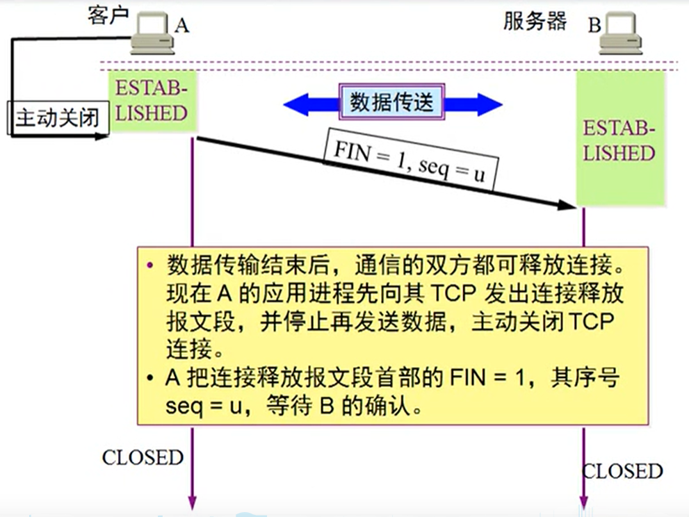
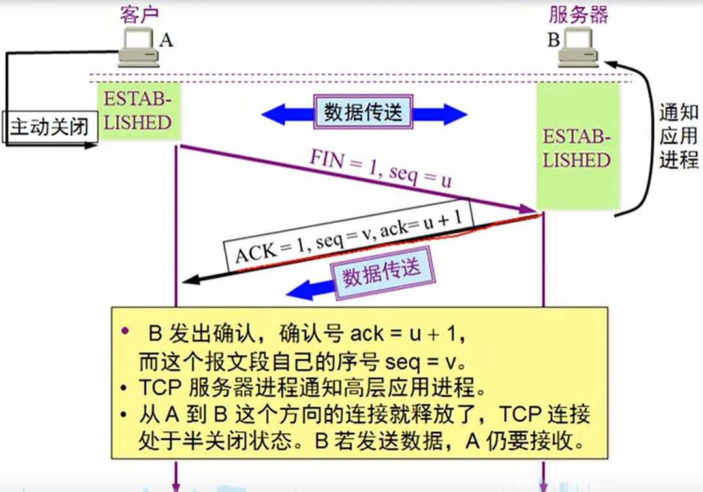
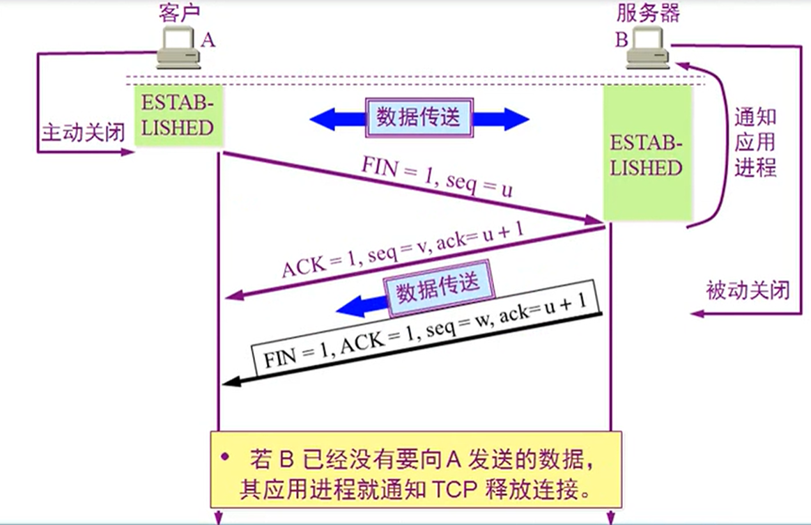
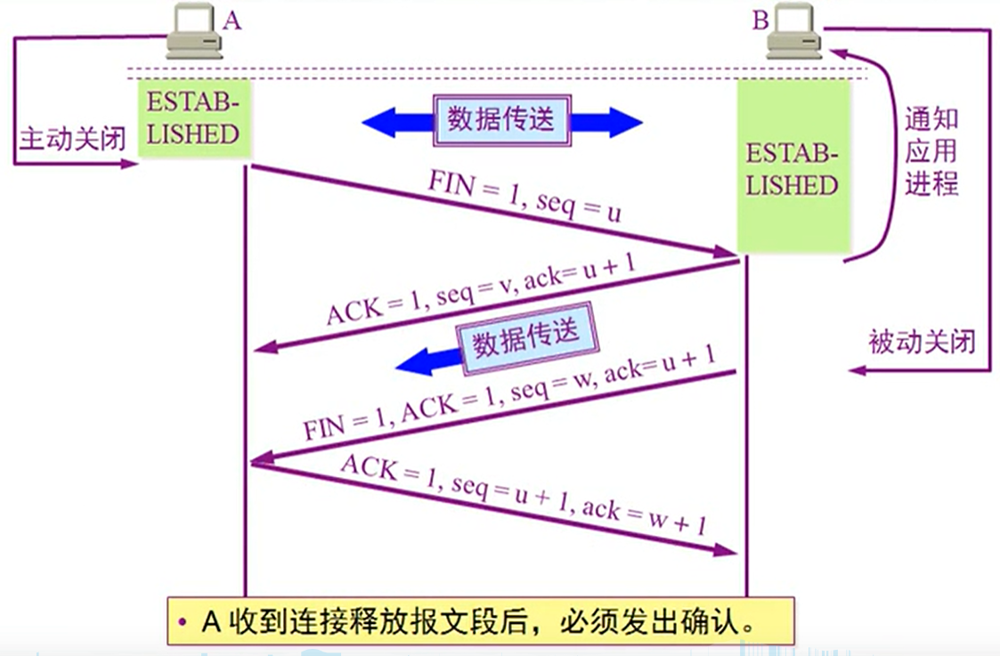
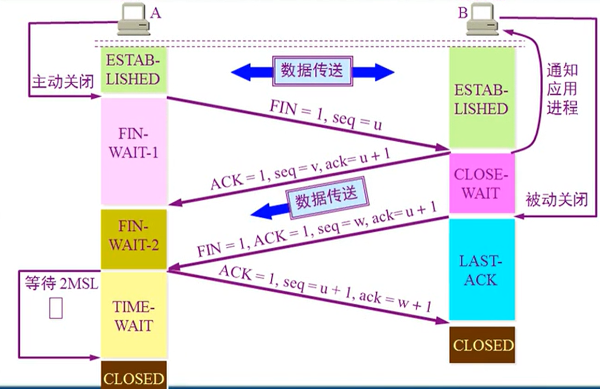